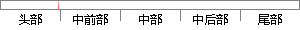

在实际环境下的声纹识别技术收到越来越多的研究者关注，尤其是在噪声环境下的声纹识别。
片段位置图

相似结果|
相似片段 1：远程识别(尤其是与文本无关的识别)的研究也将具有重要的实用价值而受到越来越多的关注。要设计并开发出一套能够适用于 Internet 网络环境的声纹识别系统，涉及到两个知识领域：声纹识别技术和因特网传输
|
※ 片段修改建议 ※
近似词参考：- 实际：现实
- 环境：情况
- 技术：手艺 技能
- 关注：存眷
- 环境：情况
系统自动生成语句：在现实情况下的声纹识别手艺收到越来越多的研究者存眷，尤其是在噪声情况下的声纹识别。
注：本片段修改建议为系统自动生成，仅供参考。